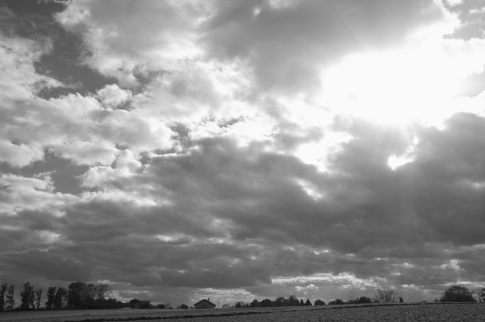
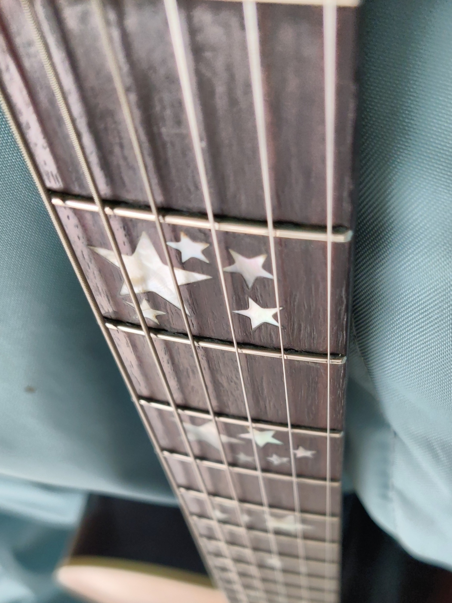

<!DOCTYPE html>

<html lang="en">
  <head>
    <meta charset="utf-8" />
    <title>objet</title>
    <meta name="keywords" content="guitar, looper, keiko tsuda, fnog" />
    <meta name="viewport" content="width=device-width, initial-scale=1.0" />
    <script>
      !(function (t, e) {
        var o, n, p, r;
        e.__SV ||
          ((window.posthog = e),
          (e._i = []),
          (e.init = function (i, s, a) {
            function g(t, e) {
              var o = e.split(".");
              2 == o.length && ((t = t[o[0]]), (e = o[1])),
                (t[e] = function () {
                  t.push([e].concat(Array.prototype.slice.call(arguments, 0)));
                });
            }
            ((p = t.createElement("script")).type = "text/javascript"),
              (p.async = !0),
              (p.src = s.api_host + "/static/array.js"),
              (r = t.getElementsByTagName("script")[0]).parentNode.insertBefore(
                p,
                r
              );
            var u = e;
            for (
              void 0 !== a ? (u = e[a] = []) : (a = "posthog"),
                u.people = u.people || [],
                u.toString = function (t) {
                  var e = "posthog";
                  return (
                    "posthog" !== a && (e += "." + a), t || (e += " (stub)"), e
                  );
                },
                u.people.toString = function () {
                  return u.toString(1) + ".people (stub)";
                },
                o =
                  "capture identify alias people.set people.set_once set_config register register_once unregister opt_out_capturing has_opted_out_capturing opt_in_capturing reset isFeatureEnabled onFeatureFlags getFeatureFlag getFeatureFlagPayload reloadFeatureFlags group updateEarlyAccessFeatureEnrollment getEarlyAccessFeatures getActiveMatchingSurveys getSurveys".split(
                    " "
                  ),
                n = 0;
              n < o.length;
              n++
            )
              g(u, o[n]);
            e._i.push([i, s, a]);
          }),
          (e.__SV = 1));
      })(document, window.posthog || []);
      posthog.init("phc_vqKUfwb05UaNZESJUtnmW25GZgZ7DabNlSXsmSyj0mB", {
        api_host: "https://e.abla.io",
      });
    </script>
    <!--<link href="https://fonts.googleapis.com/css2?family=Roboto+Mono&display=swap" rel="stylesheet"> -->
    <style>
      @font-face {
        font-family: Inter, sans-serif;
        font-style: normal;
        font-weight: 400;
        url:
        src: local(""),
          url("../include/Inter-Regular.woff2") format("woff2"),
      }
      body {
        background-color: #FFFEF7;
        max-width: 800px;
        color: #2d1e2f;
        line-height: 1.6;
        font-family: "Inter", monospace;
        font-size: 1em;
        margin: 40px auto;
        padding: 0 10px;
      }
      code {
        font-size: 1.6em;
        color: #2d1e2f;
      }
      h1 {
        font-weight: bold;
        font-size: 1.6em;
        margin-top: 2em;
      }
      hr {
        margin-top: 4em;
        border: none;
        background-color: #555;
        color: #2d1e2f;
        height: 1px;
      }
      a {
        color: #2d1e2f;
      }
      a:hover {
        color: #2d1e1f;
      }
      img {
        margin-top: 4em;
        margin-bottom: 2em;
        max-width: 100%;
      }
      input {
        font-family: inherit;
      }
    </style>
  </head>
  <body>
    <br />
    <br />
  </body>
</html>
<p>24 04 22</p>
<p></p>
<br/><br/>
<p>2024/02/12</p>
<p>Music from the Faircamps</p>
<p>Guest: Simon Repp (Faircamp)</p>
<iframe src="https://cba.media/650448/embed?audio&q=1" width="100%"
height="220" style="border:none; width:100%; height:220px;"></iframe>
<br/><br/>
<p>02/01/2024</p>
<p>woods and strings</p>
<p></p>
<br/><br/>
<p>2024/01/25</p>
<p>this morning. grab my guitar. play a piece called &quot;souffle&quot; from an upcoming
album. enjoy the moment. peace.</p>
<video width="300" controls>
  <source src="souffle.mp4" type="video/mp4" />
  Your browser does not support the video tag
</video>
<br/><br/>
<p>2024/01/16</p>
<p>I've recorded a lot. No less than 30 albums in a 30-year career. I've played too
little. Of course, there have been the bands with small successes, the memorable
opening acts, the insignificant venues transformed into auditory paradises in
the interludes of an evening, the derisory pay slips. The life of a little
artist eternally in the making, unable to let go of his moorings in the ocean of
music because he's so busy exploring all kinds of paths in all directions (love,
travel, children, writing, cinema). I'm one of those people whose passions
explode in all directions. An attitude not much appreciated by my
contemporaries, who are obsessed with success, domination and excessive
specialization, and for whom not doing something &quot;thoroughly&quot; is tantamount to
wasting their time. Yet music has always been the common thread that binds
everything together and gives coherence to research on all fronts. And
recording, sometimes obsessively, is a method of fixing time and preventing it
from eating away at everything too quickly. But a testimony, however accurate
and honest, is never worth the experience.</p>
<p>Let's take the example of this one-year trip to the South American continent.
Everything has been said, written and filmed about this corner of the world
since man first spoke, wrote and filmed. We could spend a lifetime poring over
these archives. Nothing can replace the biting cold of an evening bivouac on the
altiplano, the taste of burnt corn or the vertigo felt on these roads suspended
in the void. It's the same with music. Recording, mixing, producing,
distributing, collecting, listening to again and again over the years are all
guarantees of an activity that will never produce the pleasure and realism of an
activity practised for its own sake.</p>
<p>Is it the effect of age, of weariness, of this world heading for disaster (in
the sense of losing the star that illuminates it), I can't easily identify the
causes that now lead me to play (great verb) music for myself and those with
ears passing nearby. But if time now passes between two deliveries of &quot;works
compiled according to an agreed format&quot;, we must resolve to consider it as
excellent news in the digital noise that surrounds us. So I'm going to do a lot
of playing and too little recording in 2024.</p>
<br/><br/>
<p>2023/11/10</p>
<p>With the help of the excellent <a href="https://simonrepp.com/faircamp/">Faircamp</a>, I've
set up an online <a href="http://tsunami.oooooooooo.net/">microlabel</a> as an alternative
way to show and sell my music. You can stream the whole catalogue for free and
download high quality files for a fair price. It's still in beta and there are
albums missing. It's a work in progress and I hope to have it ready in a few
weeks.</p>
<br/><br/>
<p>2023/09/23</p>
<p></p>
<p>A few years ago, I gave my distributor permission to distribute the 7 Tempus
Fugit albums on streaming platforms. Last month he informed me that one of my
tracks had been played 5,485,633 times on facebook and that my royalties for
these broadcasts amounted to 56.51€. Two things amaze me about this information:
that one of my tracks was streamed by over 5 million unique listeners in one
month, and that Facebook only owes me €56.51 for these streams.</p>
<p>The track lasts 3min53s, and considering that it has to be listened to more than
80% to be counted (and therefore royalties paid), we're talking about more than
32 years of continuous music!</p>
<p>I remember a time, before streaming, when a radio broadcast of a song brought in
€160 and the mechanical reproduction rights were €5 per CD...</p>
<p>Need we remind facebook that the creation of music, like all intellectual
activities is time-consuming and requires a certain amount of material
resources? It's worrying to see that the streaming platforms so popular with the
younger generation barely pay the artists behind their huge profits.</p>
<p>There's still one place on the internet where you can listen to and buy music
with the guarantee that the musicians who created it are paid a fair wage:
bandcamp. So take a look at what I'm proposing on
<a href="https://tfugit.bandcamp.com/">this excellent platform</a> and stop using the
streaming platforms that are massacring creation all over the world.</p>
<br/><br/>
<p>02/07/23</p>
<p>New presence on the web.</p>
<br/><br/>
<hr/>
<p>objet &mdash; updated 04/22/24</p>
<p>this site does not track you</p>
</body>
</html>
